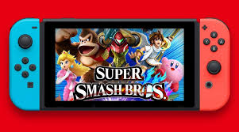
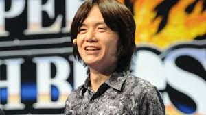
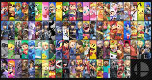
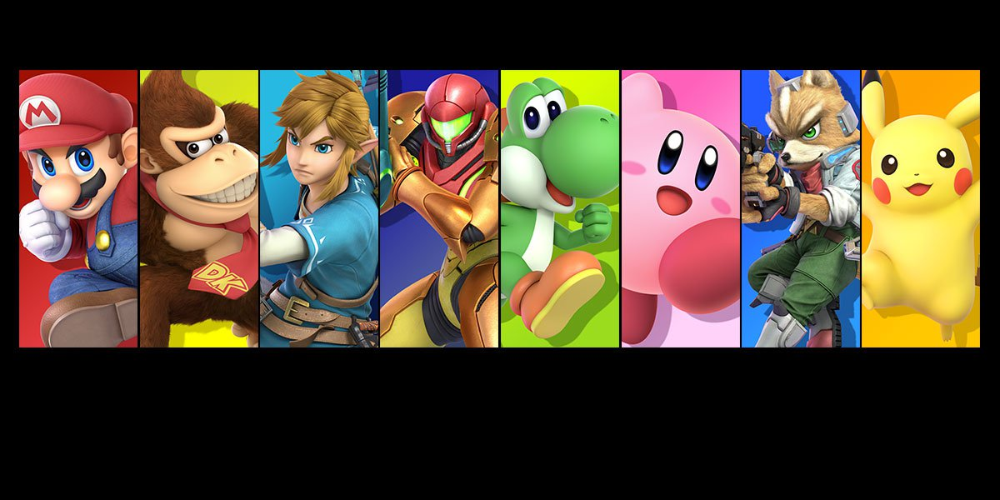

Super smash bros Ultimate is a fighting based game that is only avaliable on the nintendo switch.
The Smash Bros franchise was created in 1999 by Masahiro Sakurai. 
Ultimate features 89 playable fighters, including all characters from previous Super Smash Bros. games alongside newcomers.
When you first get into the game, you start off with only 8 characters including: Mario, Donkey kong, Link, Samus, Yoshi, Kirby, Fox, and Pikachu.